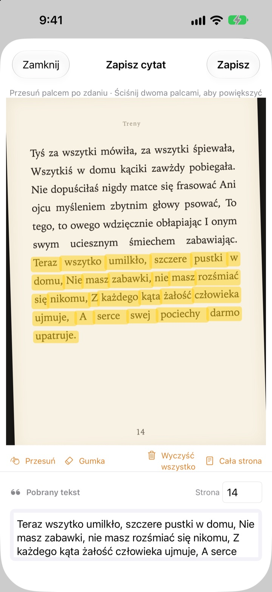
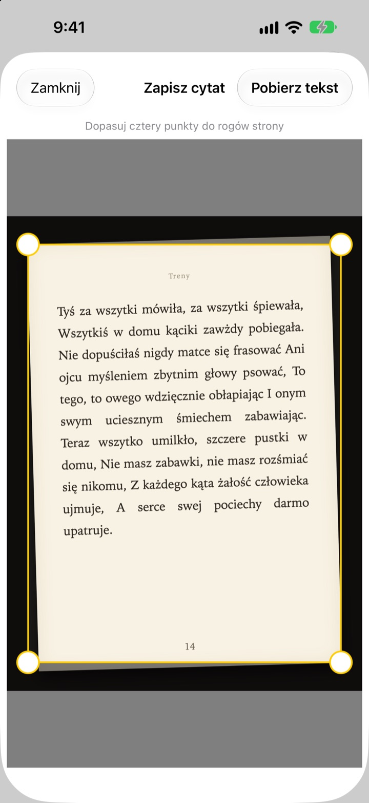
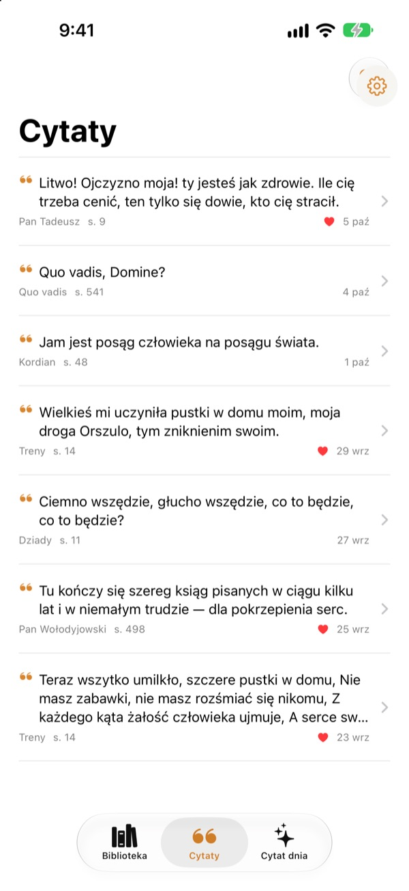
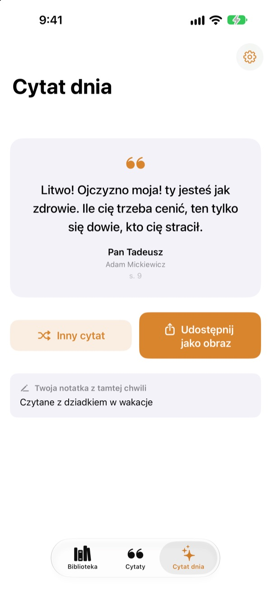

Podkreślaj w książce
bez ołówka
Sfotografuj stronę, przesuń palcem po zdaniu, które ci się podoba, a tylko ono zapisze się jako tekst. Książka i numer strony dopiszą się same.
Wszystkie funkcje są bezpłatne, bez reklam.

Wypróbuj
Przesuń palcem lub myszą po dowolnym zdaniu na stronie poniżej. Na kartę trafią tylko słowa, przez które przejedziesz.
Gdzie lądują piękne zdania?
Książka jest z biblioteki, więc nie wolno w niej pisać. Zdjęcie strony ginie wśród tysięcy innych w bibliotece zdjęć. Przepisane do notatek zdanie rzadko ma przy sobie tytuł i numer strony. Bookmark Shot zachowuje zdanie, książkę i stronę dwoma ruchami: zdjęcie i przesunięcie palcem.
Krzywe zdjęcie, prosta strona
Po zrobieniu zdjęcia dopasuj cztery rogi, a nawet krzywo sfotografowana strona wyprostuje się jak kartka. Ostrzejsze litery to lepsze rozpoznawanie.
Zdjęcia, które już masz w bibliotece, też się nadadzą.

Wszystkie cytaty w jednym miejscu
Książki stoją w biblioteczce z okładkami, a cytaty zbierają się na jednej liście. Szukaj po treści, notatce lub tytule książki i oznaczaj serduszkiem te, do których chcesz wracać.
Książkę dodasz jednym zdjęciem okładki. Tytuł i autor uzupełnią się same, a jeśli w kadrze jest kod kreskowy z tyłu okładki, także ISBN.

Wróć do zapomnianych zdań
Cytat dnia codziennie przypomina jeden z zapisanych cytatów razem z notatką, którą wtedy zostawiłeś. Dzięki widżetowi masz go na ekranie początkowym lub ekranie blokady.
Spodobał się? Zrób z niego kartę w stylu papierowej kartki i udostępnij.

Trzy kroki na start
- 1
Sfotografuj okładkę
Tytuł i autor wpiszą się same. Przed zapisaniem możesz je zmienić.
- 2
Sfotografuj stronę
Dopasuj cztery rogi, a strona się wyprostuje.
- 3
Zaznacz zdanie
Numer strony zostanie znaleziony i zapisany razem z nim.
Narzędzia na ekranie zaznaczania
- Przesunięcie palcem
- zaznacza tylko słowa, przez które przejedziesz
- Rozsunięcie palców
- powiększa, by zaznaczać dokładniej
- Przesuwanie
- przesuwa powiększoną stronę
- Gumka
- usuwa zaznaczone słowa
- Wyczyść wszystko
- usuwa całe zaznaczenie
- Cała strona
- zachowuje cały tekst strony
- Pole strony
- znaleziony numer strony, do edycji
Z VoiceOver stuknij dwukrotnie wiersz, by go dodać lub usunąć.
Wszystkie funkcje za darmo
Za darmo
- Dodawanie książek po okładce, ISBN z kodu kreskowego
- Prostowanie stron i zaznaczanie palcem
- Automatyczny numer strony
- Biblioteczka, wyszukiwanie cytatów i ulubione
- Cytat dnia z widżetami na ekran początkowy i ekran blokady
- Udostępnianie jako karta
- Synchronizacja przez iCloud
Wesprzyj twórcę
- Jeśli chcesz, zostaw drobny napiwek w Ustawieniach
- Napiwki niczego nie odblokowują. Aplikacja jest taka sama
Bez reklam i bez subskrypcji.
Pytania
Czy moje zdjęcia lub cytaty są gdzieś wysyłane?
Nie. Rozpoznawanie tekstu odbywa się w całości na urządzeniu za pomocą Apple Vision, a zdjęcia i cytaty nigdy nie trafiają na serwer. Działa też bez internetu. Szczegóły znajdziesz w Polityce prywatności poniżej.
Jakie języki potrafi odczytać?
Tekst rozpoznaje system iOS na twoim urządzeniu. Odczytuje książki po koreańsku, angielsku, japońsku, chińsku, rosyjsku i w większości języków zachodnioeuropejskich, a w nowszych wersjach iOS także po tajsku, wietnamsku, turecku, indonezyjsku, polsku, czesku, niderlandzku i w językach nordyckich. Greckiego jeszcze nie rozpoznaje.
Jak zaznaczyć tylko wybrane zdanie?
Po zrobieniu zdjęcia przesuń palcem po zdaniu jak zakreślaczem, a zaznaczą się tylko te słowa. Dla większej precyzji powiększ dwoma palcami. Jest też gumka, „Wyczyść wszystko” i „Cała strona”.
Tytuł lub autor odczytał się błędnie.
Rozpoznawanie okładki zgaduje na podstawie wielkości liter, więc przy bardzo ozdobnych okładkach może się pomylić. Tytuł i autora poprawisz przed zapisaniem książki.
Numer strony jest zły.
Odczytuje się go z cyfr na brzegu zdjęcia. Po prostu popraw go w polu strony przed zapisaniem.
Czy mogę widzieć cytaty na kilku urządzeniach?
Tak. Jeśli jesteś zalogowany do iCloud tym samym Kontem Apple i masz włączony iCloud Drive, książki i cytaty synchronizują się automatycznie.
Jak dodać widżet?
Dotknij i przytrzymaj ekran początkowy, stuknij Edycja > Dodaj widżet i wybierz Bookmark Shot. Na ekranie blokady dotknij go i przytrzymaj, a potem stuknij Dostosuj. Tam pojawi się Cytat dnia.
Aparat nie działa.
Sprawdź w Ustawienia > Bookmark Shot, czy dostęp do aparatu i zdjęć jest włączony. Do robienia zdjęć potrzebny jest prawdziwy iPhone.
Czego potrzebuję?
iPhone’a z iOS 17.0 lub nowszym.
Jak się skontaktować?
Wyślij opinię z ekranu Ustawień w aplikacji (koło zębate) albo napisz na adres poniżej. Zwykle odpowiadamy w ciągu dwóch, trzech dni.
Pytania lub uwagi? Napisz na leeo@kakao.com.